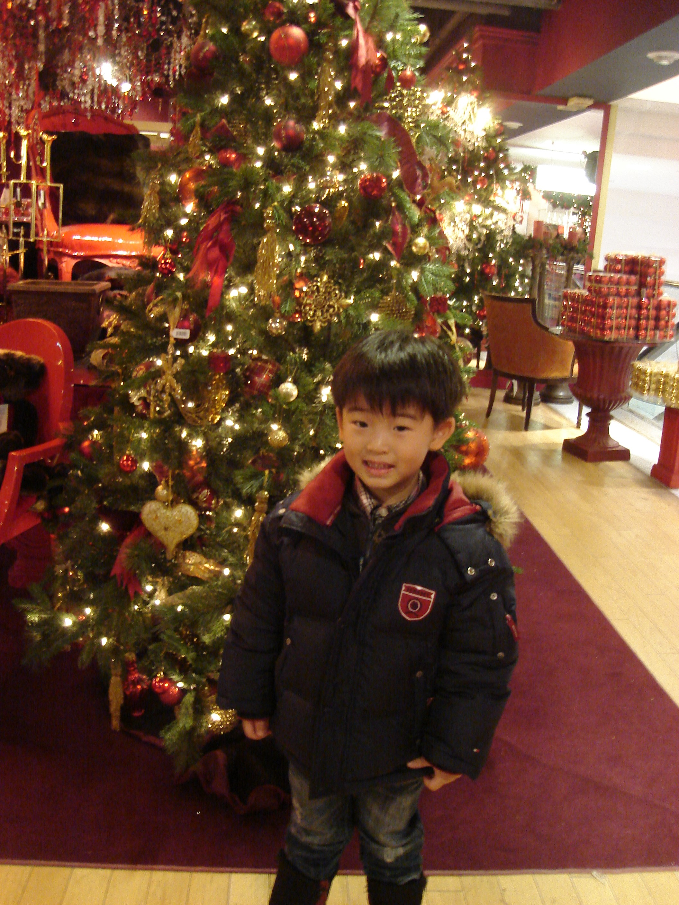
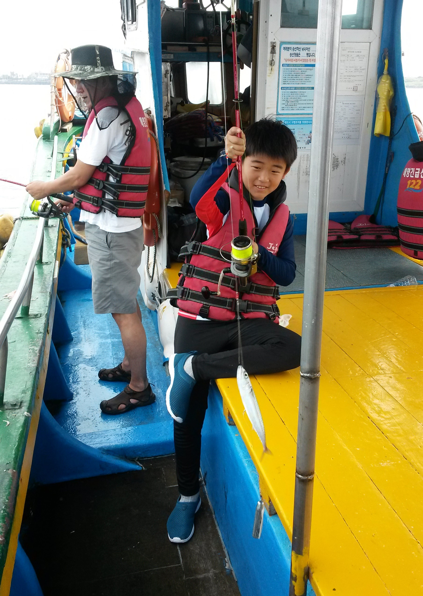

| Small Biography! |
|---|
In this section I will be adressing more personal aspects of me, as this will be like a mini biography on me!
 Early Life: On December 15, 2006 I was born. Since then, my dad (Mathew Yoo) and my mom (Judy Son) have raised me. Both are south-korean and I grew up in both Canada and South Korea. Also, in April 21, 2009, my sister, Jennifer Yoo, was born. At a young age, I enjoyed physical activites, mainly swimming and ice skating. I also attended Steelsview Public School, after permamently moving into Canada. I attended there until grade 5. During this time, I enjoyed skating, and took up hockey as a hobby and played on the Willowdale Blackhawks. The picture on the right is a picture taken of me in my early years!
 Middle School Years until High School: After graduating elementary school, I went on a month and a half long trip to korea, which was the first trip to Korea in a while. I got to reunite with my family members, including my uncles and my grandparents and had a great time in general! The picture on the right is a picture taken while I was in Korea!(The picture was taken while I was fishing with my uncle on Jeju Island) After, I attended middle school,at Zion Heights Middle School, and in grade 8 got accepted into the Pre-IB Program at Victoria Park C.I. This is where I am attending currently as of right now. I am at the end of grade 9, at the time of building this website!
Family: I thought it would be better to go in depth about my family as it is split between Canada and South Korea. So in my household, there is my mom(Judy Son), my dad (Mathew Yoo), my sister (Jennifer Yoo) and me(Andrew Yoo)! In Belleville Ontario, my grandma, my uncle, my aunt and my 2 cousins live there, as the 3 adults own a resturant that gives us free food every time we visit! In South Korea, my mom's side grandma, grandpa, 2 uncles, aunt, cousins, among other relatives live there! Currently, in Busan, my grandpa and grandma reside. The rest of the family in South Korea, lives in Seoul! Not to mention, in England, I have an aunt living there as of right now! My family is quite a diverse one, with people spread out in 3 countries. I am proud of my heritage and family roots, and hope my family can do a big reunion again once COVID-19 ends!